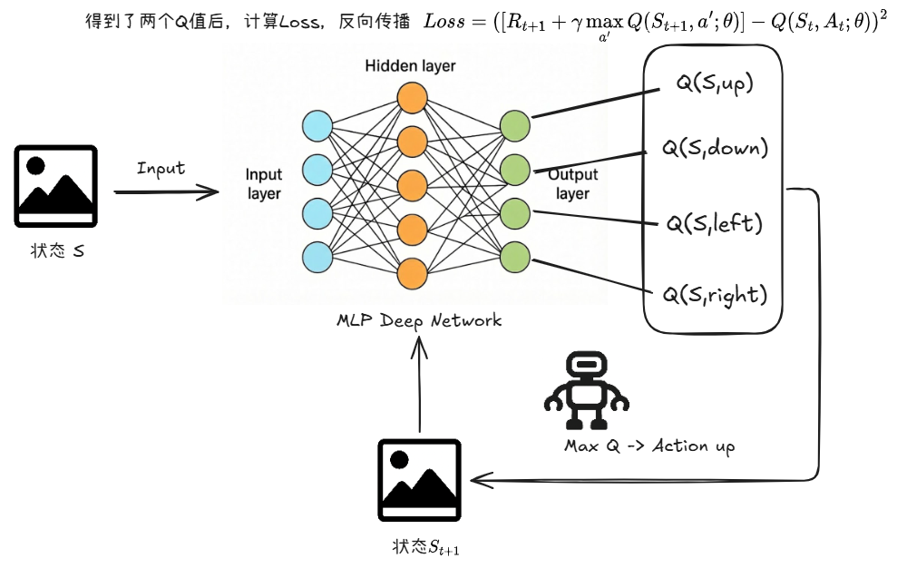
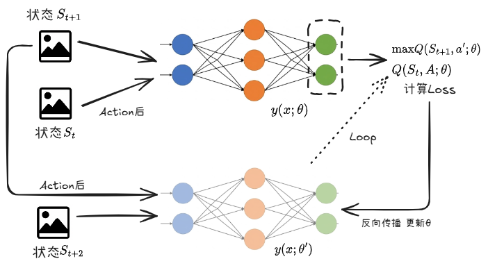
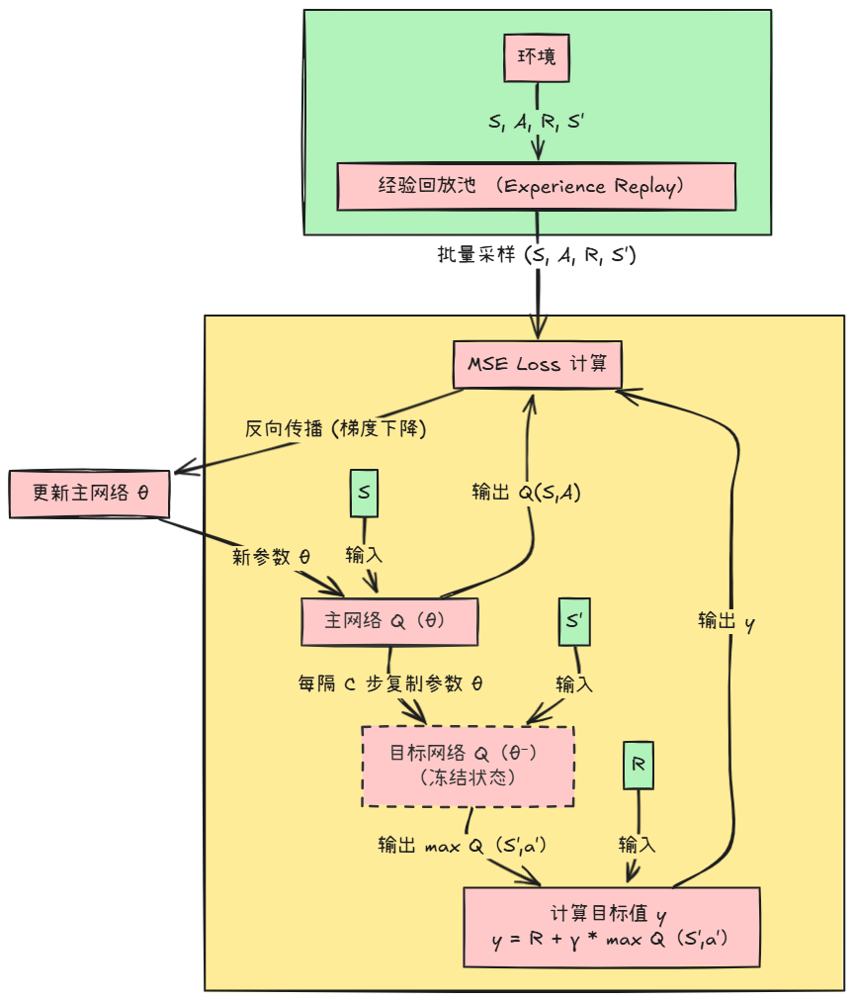

定义
DQN（Deep Q-Network），在 2013 年由 DeepMind 提出。它将强化学习和神经网络结合起来，解决了 Q-learning 的 Q 值在复杂环境（图像、视频）下难以储存和搜索的问题。
举例
Q-learning： 假设你正在参加一场考试，你的手里有一张巨大的作弊表（也就是 Q-Table）。
- 题目（状态 $S$）是：“1+1等于几？”。你查表，找到对应行，答案（最佳动作 $A$）是“2”。
- 题目是：“2+2等于几？”。你查表，答案是“4”。
这很好用，但前提是题目数量有限。 如果题目变成了视频游戏画面呢？ 一个屏幕有几万个像素，每个像素有 256 种颜色。这些组合起来的状态数量是一个天文数字。
DQN： 我们不再需要这一张作弊表，而是请来了一个学霸（神经网络）
- 我们不再记录每一个具体问题的答案。
- 相反，我们教这位学霸学习“解题规则”（通过梯度下降训练）。
- 当一个新的题目（从未见过的游戏画面）出现时，学霸不需要查表，他看一眼题目，脑子转一转（前向传播），就能推理出答案大约是多少。
具体流程

假设我们在玩一个简单的游戏，有 上、下、左、右 4 个动作。
1. 输入层 (Input)：
- 机器看到了当前的游戏画面（状态 $S_t$）。
- 这些像素点的数据（比如一个数字向量或矩阵）被喂给神经网络的输入层。
2. 处理层 (Hidden Layers - 前向传播)：
- 神经网络内部的神经元开始疯狂计算，特征提取一层接一层（比如卷积层提取图像特征，全连接层整合信息）。
3. 输出层 (Output)：
- 网络的最后一层有 4 个神经元，分别对应 4 个动作。
- 它们吐出 4 个数字，这就是网络估计出来的 Q 值：
[Q(S,上), Q(S,下), Q(S,左), Q(S,右)]比如：[10.5, 2.1, -5.0, 8.8]
4. 决策 (Decision)：
- 就像在 Q-learning 里查表一样，智能体看一眼这 4 个数字，挑出最大的那个（10.5，对应“上”），然后根据 $\epsilon$-贪心策略决定是否执行这个动作。
公式
DQN和之前的 Q-learning 的更新公式大致相同，均是新值 $\leftarrow$ 旧值 + $\alpha$ (目标值 - 旧值)。 在深度学习中，我们通过 Loss Function 和 反向传播梯度下降来最小化预测值和目标值之间的差别。
DQN的损失函数： $$Loss(\theta) = \mathbb{E} \left[ (\underbrace{R_{t+1} + \gamma \max_{a'} Q(S_{t+1}, a'; \theta)}_{\text{TD Target (目标)}} - \underbrace{Q(S_t, A_t; \theta)}_{\text{当前网络的预测}})^2 \right]$$ $Q(S_t,A_t;\theta)$ 是网络对当前动作的价值预测； $\text{max}Q(S_{t+1},a';\theta)$ 是下一个状态中动作价值的预测的最大值。
问题
当你计算出 Loss 之后，反向传播更新参数 $\theta$ ，虽然当前状态的预测值得到了一个调整，但是目标值也是通过这个神经网络预测出来的，而你更新了参数 $\theta$ 后，目标值的预测也随着改变。 这样就造成了一个局面：神经网络不断地在试图调整，尽量缩小一个由自己制造出来的、不断更新的幻影目标，也就是出现了“自己追自己”的局面。这样会导致训练过程极其不稳定，网络参数经常会发散，模型根本学不会。

问题解决
引入目标网络
为了解决“自己追自己”的这个问题，我们提出了引入目标网络这个办法（固定参数 $\theta$）
举例
你是个射手（主网络 $\theta$），你要射中靶心。但靶子是你自己的影子（也是 $\theta$ 决定的）。你一动，影子就动。你永远射不准。
解决方案：找一个木头人（替身），站在那里帮你举着靶子。
- 制造替身： 你复制了一个和自己一模一样的替身。
- 冻结替身： 你施了定身法，这个替身是不会动的。它负责举着靶子（计算目标值）。
- 专心训练： 你（主网络）看着替身手里固定不动的靶子，专心调整自己的姿势（更新参数 $\theta$），努力射中它。
- 定期同步： 过了一段时间（比如练了 1000 次），你的水平提高了。你解开定身法，让替身变成你现在的样子，然后再次定住它。重复这个过程。
概念映射：
- 主网络（Online Network），参数 $\theta$ 。
- 职责：负责在环境中行动（选动作），负责计算 Loss 公式里的“预测值” $Q(S, A; \theta)$。
- 实时更新，每次迭代都进行梯度下降更新 $\theta$ 。
- 目标网络（Target Network），参数 $\theta^-$。
- 职责：只负责计算 Loss 公式里的“目标值” $y = R + \gamma \max Q(S', a'; \theta^-)$。
- 暂时冻结。它不参与反向传播。它的参数是每隔固定步数（比如 1000 步），直接从主网络 $\theta$ 复制过来的。
公式
主网络追目标网络 $$Loss = (\underbrace{R + \gamma \max Q(S', a'; \mathbf{\theta^-})}_{\text{目标(静)}} - \underbrace{Q(S, A; \mathbf{\theta})}_{\text{预测(动)}})^2$$对比改良前的 Loss $$Loss = (\underbrace{R + \gamma \max Q(S', a'; \mathbf{\theta})}_{\text{目标(动)}} - \underbrace{Q(S, A; \mathbf{\theta})}_{\text{预测(动)}})^2$$
经验回放 Experience Replay
问题： 如果机器人玩游戏，它产生的数据是连续的（比如这一帧在墙左边，下一帧肯定还在墙附近）。用这种高度相关的数据训练神经网络，效率极低且容易过拟合（就像让你只复习昨天学的课，不复习上个月的）。
解决方案： 建立一个大大的“记忆库”（Replay Buffer）。
- 机器人玩游戏时，把所有经历过的 $(S, A, R, S')$ 都扔进这个库里存着。
- 训练神经网络时，不再使用最新的那条数据。
- 而是从记忆库里随机抽取一批数据（Batch）来进行训练。
经验回放的好处：
- 打乱了时间相关性：让数据变得独立同分布 (i.i.d)，满足神经网络的训练假设。
- 提高了数据利用率：一条珍贵的经验可以被反复抽取利用，而不是用一次就扔。
流程

举例
想象“复盘一场旧棋局”
-
收集经验时 (一个月前)： 你是一个围棋初学者（旧参数 $\theta_{old}$）。你下了一盘棋，走到第 50 手时，你走了一步“昏招”（动作 $A$），导致后来输了。你把这盘棋的棋谱（经验数据 $S, A, R, S'$）存进了你的棋谱库（经验回放池）。
- 当时你的脑子（网络）认为这步棋还不错。
-
采样训练时 (今天)： 你已经学了一个月棋了，成了业余高手（新参数 $\theta_{new}$）。 你从棋谱库里随机抽出了一个月前的那盘棋谱，看到了第 50 手那个局面（状态 $S$）和你当时下的那步棋（动作 $A$）。
-
关键点： 现在要“批改”这步棋下得好不好。你是用一个月前的初学者脑子去评判，还是用今天的高手脑子去评判？
答案是：用今天的高手脑子。
- 你的高手脑子（当前主网络 $\theta$）一看：“哎呀，这步棋下得太臭了，应该只值 10 分。”（重新计算预测值 $Q(S, A; \theta_{new})$）
- 你的高手脑子的“稳定版替身”（目标网络 $\theta^-$）评估了一下这步棋导致的后续局面：“这局面太烂了，以后再怎么下也没希望了。”（重新计算目标值 $y$）。
- 于是，你用今天的眼光，发现了过去的错误，并更新了自己的知识库。这就叫“温故而知新”。
off-policy
DQN的这些操作，就是一个典型的off-policy策略
- 行动策略（Behavior Policy）： 是过去那个旧网络（比如 $\epsilon$-greedy 的 $\theta_{old}$），它产生了这些历史数据。
- 目标策略（Target Policy）： 是我们现在想要优化和评估的策略，也就是当前这个越来越贪心、越来越强的新网络 $\theta_{new}$。
如果我们用旧参数去计算 Loss，那我们就是在评估旧策略，而不是在改进新策略了。
DQN 的强大之处就在于：它可以用“旧策略”产生的“旧数据”，来训练和提升“新策略”。 这使得数据的利用率极高。